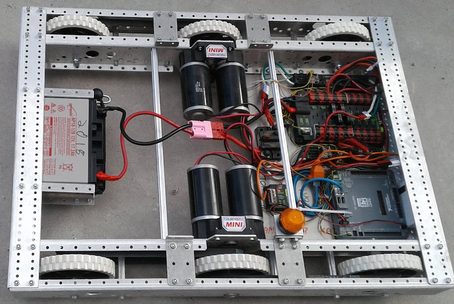
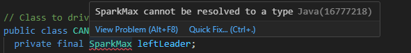
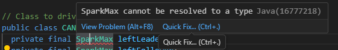
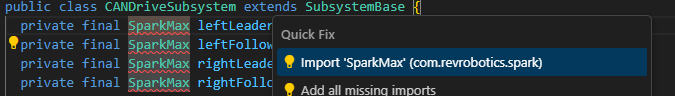
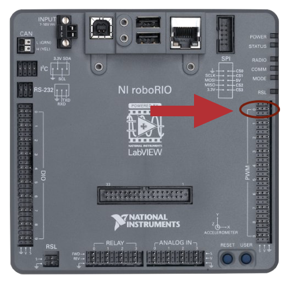

Creating a Basic Driving Robot#
Lets get moving!

Overview#
This section is designed to help you program a basic driving robot, start to finish.
See table of contents for a breakdown of this section.
Quick Select: Motor Controller#
Switch all code examples on this page between SparkMax and TalonFX:
Creating the Drivetrain Subsystem#
Before we begin we must create the class file for the drivetrain subsystem. See Creating a New Subsystem for info on how to do this.
What will be added to the Drivetrain#
In the Drivetrain class we will tell the subsystem what type of components it will be using.
- A Drivetrain needs motor controllers. In our case we will use Neo SparkMaxes (a brand of controller for motors made by Rev Robotics).
- You could use other motor controllers such as Victor SPs or Talon SRs but we will be using NEO SparkMaxes
- If you are using other motor controllers, replace SparkMax with Talon, TalonSRX, Victor, or VictorSP in the code you write depending on the type you use.
- You can use 2 motors (left and right), but for this tutorial we will use 4.
More Info
Be sure to read Visual Studio Code Tips before getting started! It will make your life a lot easier.
Declaring Motor Variables#
1) Create 4 global variables of the appropriate motor controller type and name them: leftLeader, rightLeader, leftFollower, rightFollower
Type the word SparkMax followed by the name, e.g.: private final SparkMax leftLeader;
These will eventually hold the object values for SparkMaxes, their port numbers, and their motor type (brushed or brushless).
Type the word TalonFX followed by the name, e.g.: private final TalonFX leftLeader;
These will eventually hold the object values for TalonFX motors. Unlike SparkMax, TalonFX does not require a motor type parameter.
Java concept: private final fields
private means only this class can access this variable — no other subsystem or command can accidentally change your motor objects. final means the variable is assigned once (in the constructor) and never reassigned. Together they say "this motor belongs exclusively to this subsystem." See Variables and Data Types for more on final and Classes for more on private.
2) These are declared without values right now.
- We do this to make sure it is empty at this point.
- When we assign these variables a value, we will be getting the motor controller's port numbers out of Constants
- This means we cannot assign them at the global level
Example code
Motor Member Variables:
If an error occurs (red squiggles)
-
Mouse Over the word : The following menu should appear.

-
💡 Click "quick fix"

-
Select "Import 'SparkMax' (com.revrobotics.spark)" or "Import 'TalonFX' (com.ctre.phoenix6) depending on which motor controller you are using.

-
Your error should be gone!
Using Constants#
Note
Constants.java fills the same role that older WPILib projects called RobotMap.java — a single file mapping every physical port to a named constant. If you see references to RobotMap in older FRC code examples, treat them the same as Constants.
Since each subsystem has its own components with their own ports, it is easy to lose track of which ports are being used and for what. To counter this you can use a class called Constants to hold all these values in a single location.
- Names should follow the pattern SUBSYSTEM_NAME_OF_COMPONENT
- The name is all caps since it is a constant (more info on constants).
Before we initialize the motor objects we are going to create constants to hold the CAN IDs of the motors, plus a current limit shared by all four. This happens in Constants.java.
!!! note The motor current limit is a safety feature that prevents the motors from drawing too much current and tripping breakers or damaging the motors. The limit is set in amperes (A) and should be chosen based on the motor's specifications and your robot's electrical system. This limit should always be the same or lower than the breaker rating for the motor's circuit to avoid nuisance trips.
- Inside the
Constantsclass, create a new inner class calledpublic static final class DriveConstants. - Inside
DriveConstants, create four constants:LEFT_LEADER_ID,LEFT_FOLLOWER_ID,RIGHT_LEADER_ID, andRIGHT_FOLLOWER_ID. - Add a fifth constant,
DRIVE_MOTOR_CURRENT_LIMIT, set to a reasonable amperage. This caps how much current each drive motor can draw so you don't trip breakers or damage a motor. - Back in
CANDriveSubsystem.java, add a static import forDriveConstantsso its members can be referenced without theDriveConstants.prefix:import static frc.robot.Constants.DriveConstants.*;
Tip
Make sure to declare constants with public static final so they cannot be changed at runtime.
Danger
If you set this to the wrong value, you could damage your robot when it tries to move!
Note
To use Constants, instead of putting 0 for the port in the motor constructor:
Note
Replace the remaining numbers with constants.
Tip
Remember to save both CANDriveSubsystem.java and Constants.java
DriveConstants Example
Drive Constants Definition:
public static final class DriveConstants {
// Motor controller IDs for drivetrain motors
public static final int LEFT_LEADER_ID = 1;
public static final int LEFT_FOLLOWER_ID = 2;
public static final int RIGHT_LEADER_ID = 3;
public static final int RIGHT_FOLLOWER_ID = 4;
// Current limit for drivetrain motors. 60A is a reasonable maximum to reduce
// likelihood of tripping breakers or damaging CIM motors
public static final int DRIVE_MOTOR_CURRENT_LIMIT = 60;
}
public static final class DriveConstants {
// Motor controller IDs for drivetrain motors
public static final int LEFT_LEADER_ID = 1;
public static final int LEFT_FOLLOWER_ID = 2;
public static final int RIGHT_LEADER_ID = 3;
public static final int RIGHT_FOLLOWER_ID = 4;
// Current limit for drivetrain motors. 60A is a reasonable maximum to reduce
// likelihood of tripping breakers or damaging CIM motors
public static final int DRIVE_MOTOR_CURRENT_LIMIT = 60;
}
Full Constants.java with all Robot Constants:
See Constants.java for the complete constants file including OperatorConstants and other subsystem constants.
See Constants.java for the complete constants file including OperatorConstants.
Warning
Remember to use the values for YOUR specific robot or you could risk damaging it!
Creating and filling the constructor#
Now that we have created the motor variables and the Drive Constants we must initialize them and tell them what port on the roboRIO they are on.
1) Initialize (set value of) the motor variables with the appropriate motor controller constructor.
Initialize leftLeader to new SparkMax(LEFT_LEADER_ID, MotorType.kBrushless).
- This initializes a new SparkMax,
leftLeader, in a new piece of memory and states it is on the port defined byLEFT_LEADER_ID. - The constructor
SparkMax(int, MotorType)takes a variable of typeintfor the CAN ID andMotorTypefor brushless or brushed.
Initialize leftLeader to new TalonFX(LEFT_LEADER_ID).
- This initializes a new TalonFX,
leftLeader, in a new piece of memory and states it is on the port defined byLEFT_LEADER_ID. - Unlike SparkMax, TalonFX takes only the CAN ID — no motor type parameter is needed (TalonFX is always brushless).
- This should be done within the constructor
CANDriveSubsystem(), for all four motors (leftLeader,leftFollower,rightLeader,rightFollower).
Java concept: Constructor
The constructor is a special method that runs once when an object is created with new. It is where hardware gets initialized — motors receive their port numbers, controllers get configured. The constructor name always matches the class name exactly. See Java Classes for more information.
roboRIO port diagram

2) Configure CAN communication and current limits.
Setting CAN Communication Timeout:
Each SparkMax motor must be configured with a CANTimeout (how long to wait for a response from the motor controller).
No CAN timeout needed
Phoenix 6 manages CAN communication internally. No explicit setCANTimeout() equivalent exists. Configuration is applied via getConfigurator().apply(config) — see the section below.
Voltage Compensation, Current Limiting, and Neutral Mode:
Create the configuration to apply to motors. DRIVE_MOTOR_CURRENT_LIMIT (from DriveConstants) sets the current limit, which helps prevent tripping breakers.
Voltage compensation helps the robot perform more similarly on different battery voltages (at the cost of a little bit of top speed on a fully charged battery).
Phoenix 6 does not include a direct voltage compensation equivalent. Supply current limiting still protects your breakers.
TalonFXConfiguration config = new TalonFXConfiguration();
config.CurrentLimits.SupplyCurrentLimit = DRIVE_MOTOR_CURRENT_LIMIT;
config.CurrentLimits.SupplyCurrentLimitEnable = true;
config.MotorOutput.NeutralMode = NeutralModeValue.Brake;
Note
This configuration also sets NeutralMode to Brake. This tells the motor to actively resist being pushed when no power is commanded — useful for a drivetrain, since you generally don't want the robot to coast or roll after you let go of the joystick. The SparkMax equivalent is setIdleMode(IdleMode.kBrake).
3) Declare and initialize the DifferentialDrive object using the two leader motors.
Member Variable Declaration:
This defines the drive object that we will use to drive the robot.
Constructor Initialization:
drive = new DifferentialDrive(leftLeader, rightLeader);
- Since DifferentialDrive takes 2 parameters we pass the left and right leader motors.
- SparkMax implements the WPILib
MotorControllerinterface, so it can be passed directly toDifferentialDrive.
drive = new DifferentialDrive(leftLeader::set, rightLeader::set);
- TalonFX (Phoenix 6) does not implement the WPILib
MotorControllerinterface, so aTalonFXobject cannot be passed directly to theMotorController-based constructor. - TalonFX does expose a
set(double)method, so we useDifferentialDrive's other constructor, which takes twoDoubleConsumermethod references (leftLeader::set,rightLeader::set) instead ofMotorControllerobjects. See CTRE's MotorController Integration docs.
Why only the leaders?
DifferentialDrive only needs to know about the two leader motors. The followers are wired up separately in the next section using each vendor's follower-control feature, so they automatically mirror their leader's output without DifferentialDrive needing to touch them directly.
Build & Verify
Build your code now (Ctrl+Shift+P → WPILib: Build Robot Code) and confirm there are no compile errors before moving on. At this point your constructor creates all four motors, builds the current-limit configuration, and initializes drive with the two leaders — the followers aren't wired up yet, so hold off on deploying to a robot until the next section is done.
Constructor So Far
See CANDriveSubsystem.java for the complete constructor implementation, including the follower setup covered in the next section.
See CANDriveSubsystem.java for the complete constructor implementation, including the follower setup covered in the next section.
Creating the arcade drive#
What is the Drive Class#
- The FIRST Drive class has many pre-configured methods available to us including DifferentialDrive, and many alterations of MecanumDrive.
- DifferentialDrive contains subsections such as TankDrive and ArcadeDrive. For more information and details on drive bases see the WPILib documentation.
- For our tutorial we will be creating an ArcadeDrive
- Arcade drives run by taking a moveSpeed and rotateSpeed. moveSpeed defines the forward and reverse speed and rotateSpeed defines the turning left and right speed.
- We already created and initialized the
driveobject in the constructor — now we'll wire up the follower motors and usedriveto build a command the driver can control.
Configuring Followers and Motor Direction#
In order to configure the motors to drive correctly, we need to configure one on each side as the leader and one as the follower. In the constructor, after building the current-limit configuration, we set the follower motors and link them to the leader motors.
Warning
You should only group motors that are spinning the same direction physically when positive power is being applied otherwise you could damage your robot.
To do this we will need to include classes from the REV Library:
import com.revrobotics.spark.SparkBase.PersistMode;
import com.revrobotics.spark.SparkBase.ResetMode;
Then in the constructor, configure the followers to follow the leaders:
Set follower configuration:
config.follow(leftLeader);
leftFollower.configure(config, ResetMode.kResetSafeParameters, PersistMode.kPersistParameters);
config.follow(rightLeader);
rightFollower.configure(config, ResetMode.kResetSafeParameters, PersistMode.kPersistParameters);
Configure right leader:
config.disableFollowerMode();
rightLeader.configure(config, ResetMode.kResetSafeParameters, PersistMode.kPersistParameters);
Invert left leader for correct motor direction:
To do this we will need to include classes from the Phoenix 6 Library:
import com.ctre.phoenix6.controls.Follower;
import com.ctre.phoenix6.signals.InvertedValue;
import com.ctre.phoenix6.signals.NeutralModeValue;
import com.ctre.phoenix6.signals.MotorAlignmentValue;
import com.ctre.phoenix6.configs.TalonFXConfiguration;
Then in the constructor, configure the followers to follow the leaders:
Set follower configuration:
leftFollower.getConfigurator().apply(config);
leftFollower.setControl(new Follower(LEFT_LEADER_ID, MotorAlignmentValue.Aligned));
rightFollower.getConfigurator().apply(config);
rightFollower.setControl(new Follower(RIGHT_LEADER_ID, MotorAlignmentValue.Aligned));
Note
Follower control mode only mirrors the leader's output — it does not copy the leader's configuration. Each TalonFX has its own independent config, so the current limit and neutral mode must be applied to the followers directly (as shown above) in addition to the leaders. Once setControl(new Follower(...)) is called, the follower mirrors its leader's output automatically from then on.
Configure right leader:
Invert left leader for correct motor direction:
Full Drive Subsystem Example
See CANDriveSubsystem.java for the complete implementation with all motor configuration and initialization.
See CANDriveSubsystem.java for the complete implementation with all motor configuration and initialization.
Creating the driveArcade Command Factory#
Instead of writing a separate command class, we use the command factory pattern — a method on the subsystem that returns a Command. This is the modern WPILib approach and keeps drive logic inside CANDriveSubsystem where it belongs. See Command Based Robot for background on commands.
Abstract
Below the periodic method, add the driveArcade factory method:
this.run(...)creates a command that calls the lambda repeatedly while scheduled. The subsystem is automatically added as a requirement.- The parameters are
DoubleSupplier(a function that returns adouble) rather than plaindoublevalues. This ensures the joystick reading is evaluated every loop cycle instead of being captured once. This is important to ensure the robot continuously responds to joystick movement. drive.arcadeDrive(...)is the WPILibDifferentialDrivecall that physically moves the motors.
Note
To use tank drive instead, replace drive.arcadeDrive(...) with drive.tankDrive(...) and rename the method accordingly.
Tip
Multiply the speed values by a decimal to cap the max speed during initial testing (e.g. xSpeed.getAsDouble() * 0.5). This makes it easier to verify the robot drives in the correct directions before running at full power/speed.
Common Issues
- Robot drives backward when you push forward — the left or right side inversion is flipped. Double-check which side you inverted and try the opposite value.
- Followers don't move — verify the CAN ID passed to the follower setup matches the leader's actual CAN ID constant, not a hardcoded number.
- Cannot find symbol
Follower/InvertedValue(TalonFX) — make sure the Phoenix 6 imports listed above are present; VSCode's Quick Fix can add them automatically.
Build & Verify
Build the project again (Ctrl+Shift+P → WPILib: Build Robot Code) and confirm there are no errors. If you have a robot connected, this is a good point to deploy and bench-test: push the left stick forward/back to drive, and the right stick left/right to rotate.
Wiring Up in RobotContainer#
Now we connect the subsystem to the driver’s controller by setting a default command in RobotContainer.java.
Adding the Driver Controller#
The RobotContainer class holds all subsystems, controllers, and command bindings. A CommandXboxController is declared here and reads joystick input.
Note
1) Open Constants.java and confirm the DRIVER_CONTROLLER_PORT constant is present inside OperatorConstants.
2) Open RobotContainer.java and confirm a CommandXboxController driverController field is declared at the top of the class that uses that constant.
Finding your joystick port in the Driver Station
Open the Driver Station application and click the USB tab (the plug icon on the left). The number next to your controller is its port — use that value for DRIVER_CONTROLLER_PORT in Constants. Controllers can be dragged in the list to change their assigned port (the controller port is usually 0 by default if only one controller is plugged in).
Using setDefaultCommand#
setDefaultCommand tells a subsystem which command to run whenever no other command is using it. Since we always want the driver to be able to move the robot, the drive factory command is set as the default.
Abstract
Inside configureBindings() in RobotContainer.java, add:
- The Y axis is negated so pushing the stick away from you (a negative joystick value) drives the robot forward (positive motor output).
- The X axis is negated to match WPILib’s counter-clockwise-positive rotation convention.
- Both axes are scaled by constants defined in
OperatorConstantsto make the robot easier to control at full stick deflection.
Tip
The ()-> syntax creates a lambda — an anonymous function. More about Lambdas
Lambdas are required here because driveArcade expects DoubleSupplier parameters. A lambda () -> driverController.getLeftY() is a DoubleSupplier — it gets called every loop cycle so the robot continuously responds to joystick movement.
Common Issues
- Robot doesn't respond to joystick — confirm your Xbox controller shows up in the Driver Station's USB tab at the port number stored in
DRIVER_CONTROLLER_PORT. setDefaultCommandnever seems to run — make sure the call is insideconfigureBindings(), and thatconfigureBindings()is actually called from theRobotContainerconstructor.
Knowledge Check#
Quiz results are saved to your browser's local storage and will persist between sessions.
Which motor controller uses CAN and is made by REV Robotics?
What does the follow() method do on a follower motor?
Which type of drive takes a moveSpeed and rotateSpeed?
In arcade drive, what does positive rotation typically do?
What does setDefaultCommand do?
Quiz Progress
0 / 0 questions answered (0%)
0 correct
Full RobotContainer Example
See RobotContainer.java for the complete RobotContainer implementation.
See RobotContainer.java for the complete RobotContainer implementation.
Next Steps#
Your drivetrain is now functional! Consider extending it:
- Add autonomous routines — see Autonomous for building commands that run without driver input.
- Add odometry — track the robot's position on the field using encoder data.
- Add smoothing — filter joystick input (e.g. with a slew rate limiter) to reduce jitter and jerky driving.
- Tune scaling factors — revisit
DRIVE_SCALINGandROTATION_SCALINGinConstants.java, and see PID Control if you want to drive to a specific distance or angle automatically.